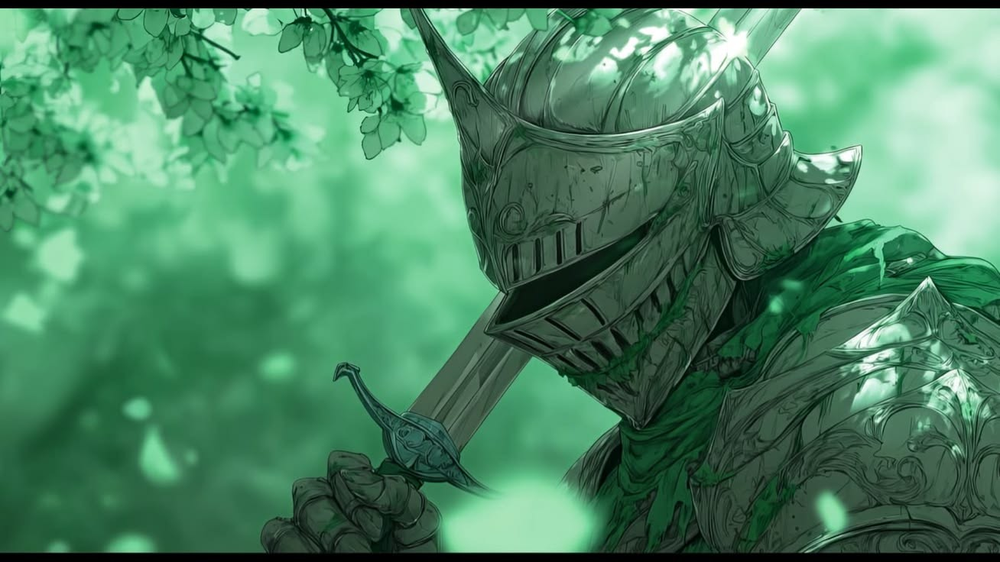
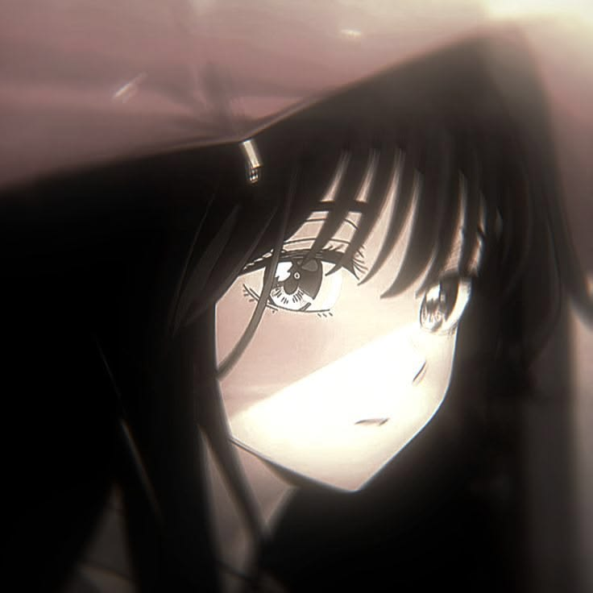
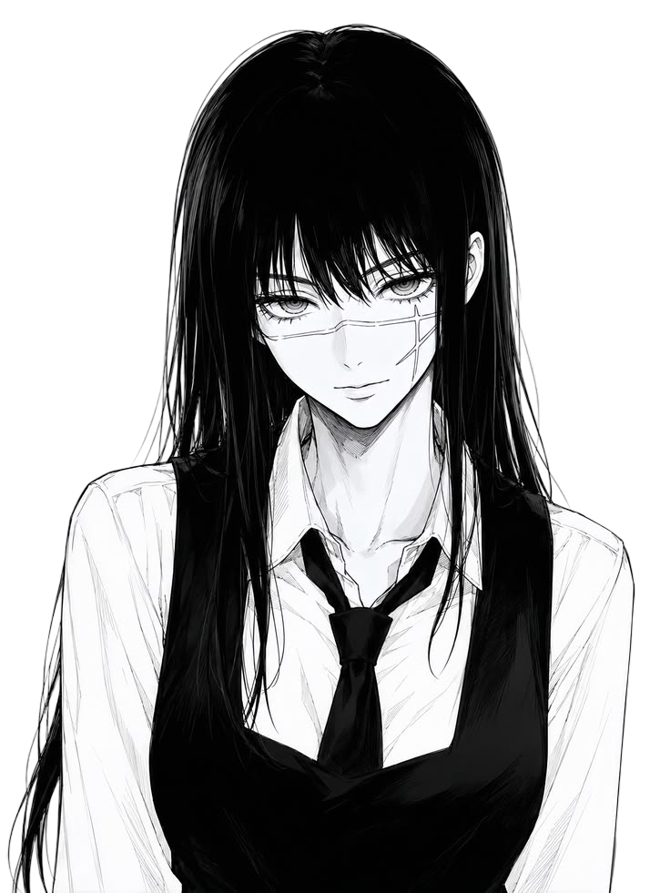
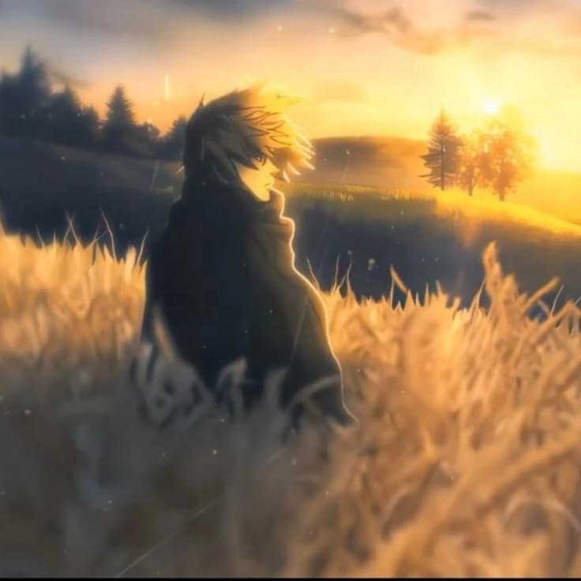
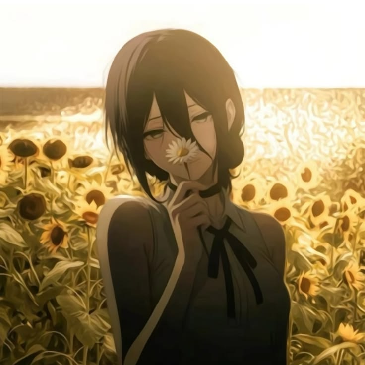
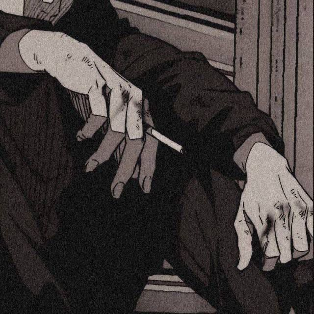
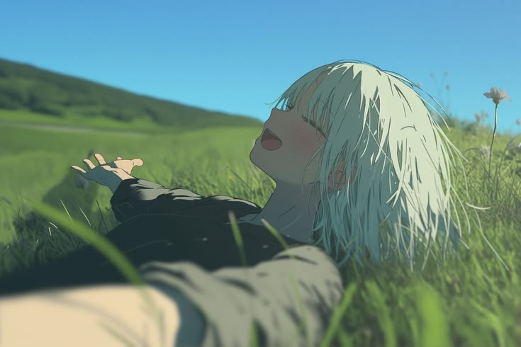
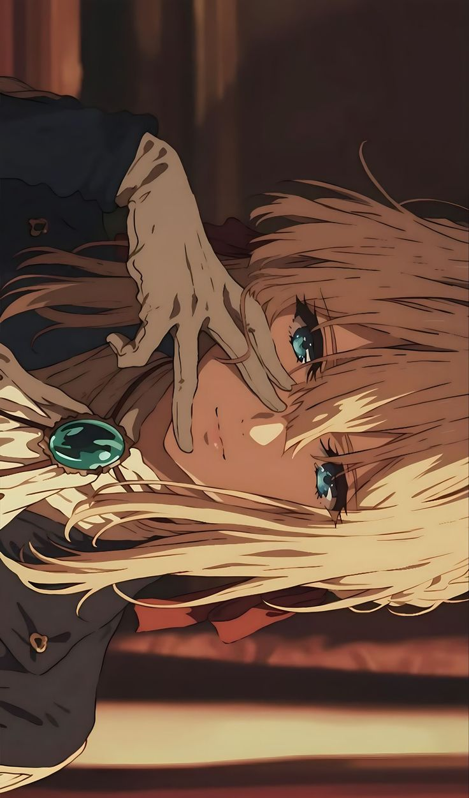

@matheusharaujo
COMO LER

Eksplorasi estetika puisi, tipografi, dan seni lukisan Barok dalam format editorial vertikal.
Gulir ke bawahCOMO LER

Os primeiros poemas eram sempre cantados ou acompanhados por músicas.

"Escolha um bom livro de sonetos e comece a ler vagarosamente, em voz alta, tentando encontrar o ritmo do texto."

"Poemas líricos, muitas vezes, não vão contar histórias. Vão falar de sentimentos."

São estes sentimentos que você deve captar e entendê-los como seus.

O homem nasce quando nasce a poesia. Quando as primeiras histórias foram contadas nas cavernas, ao redor da fogueira.

Leia poesia para se tornar cada vez mais humano.
